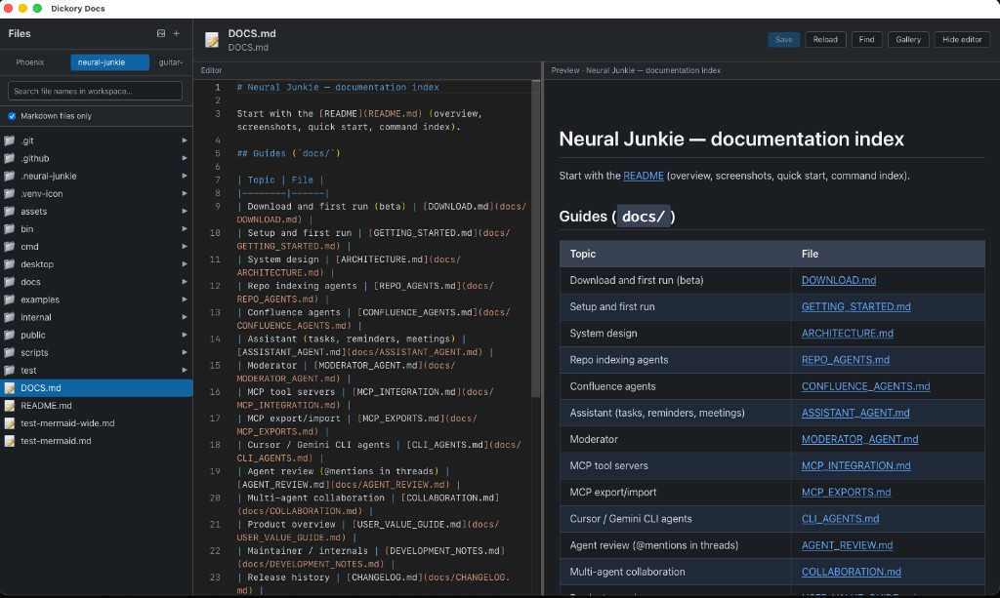
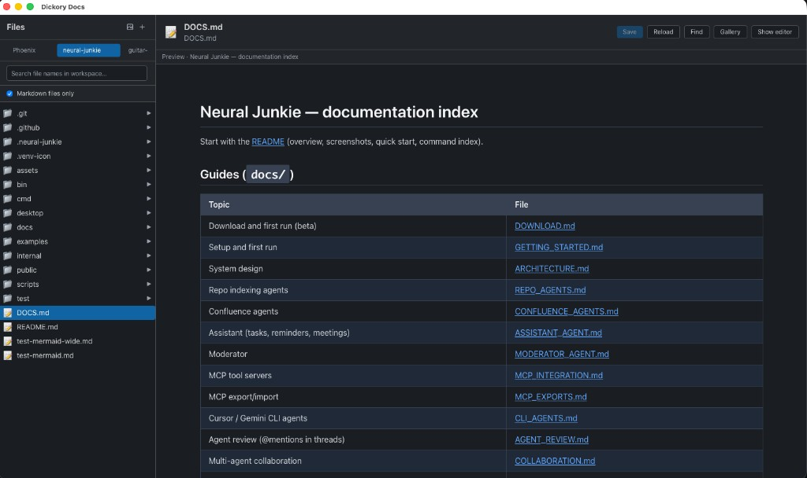
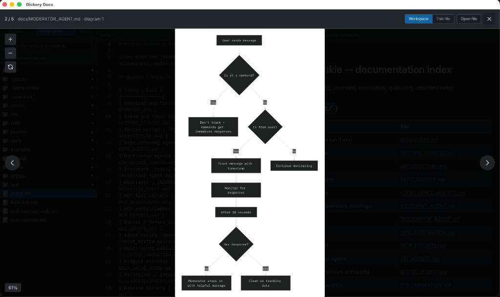

Mermaid diagram viewer
The headline feature: fenced mermaid blocks become SVG in your preview. Expand busy flowcharts and sequence diagrams to a modal — built because existing viewers weren’t good enough.
Built for Mermaid · Local-first · Open source
Dickory Docs exists because good Mermaid diagram viewers are hard to find. Point it at folders on disk, open any .md file, and every ```mermaid block renders as live SVG — inline in the doc, or full-screen when the diagram deserves the room.
v0.3.1 · The reason this app exists
Most tools either skip Mermaid, render it wrong, or make you paste into a browser tab. Dickory Docs treats diagrams as first-class: open the Markdown file from your repo, and sequence, flow, ER, and architecture charts show up where the author put them — not as raw code fences.
mermaid block renders in the preview pane.A Mermaid-first viewer wrapped in Markdown preview and local folders — not an IDE, not a paste-into-a-website tool. Everything runs on your machine.
The headline feature: fenced mermaid blocks become SVG in your preview. Expand busy flowcharts and sequence diagrams to a modal — built because existing viewers weren’t good enough.
Rendered HTML with sanitisation, working TOC anchor links, and Find in document (⌘F / Ctrl+F) — the canvas your diagrams live in, not an afterthought.
Add directories as workspaces; roots and metadata persist under your OS config dir. Git branch and remote show when the folder is a repo.
Resizable sidebar, filter by file name, markdown-only filter, context-menu create/rename/delete, and plain-text view for non-Markdown files.
Tauri + React with a Slack-inspired dark UI. File reads and workspace state stay in-process — no companion hub or network service.
Rust backend normalises paths, rejects .. escapes, and serves file trees relative to each workspace root.
Split-pane Monaco editor with live preview, save to disk, and unsaved-change prompts when switching files.
Right-click .md files in Finder and open them in Dickory Docs — fixed in v0.3.1. Adds the parent folder as a workspace when needed.
Open a specific file via query params (?preview=true&workspace=&path=) for bookmarks or tooling integration.
Edit Markdown beside live preview, expand diagrams full-screen, and browse every ```mermaid block in a workspace gallery — all on local files.

.md on disk with Mermaid rendered beside the source.


From repo to rendered Mermaid — then search and jump through long docs. No export, no online editor.
.md.```mermaid fence renders as SVG in the preview.Latest build: v0.3.1 on GitHub Releases — macOS .dmg, Windows .msi, Linux .AppImage / .deb.
| Platform | File |
|---|---|
macOS · uname -m → arm64 |
*_aarch64.dmg (Apple Silicon, native) |
macOS · uname -m → x86_64 |
*_x64.dmg (Intel, or Rosetta on Apple Silicon) |
| Windows | .msi or setup .exe |
| Linux | .AppImage and/or .deb |
macOS builds are unsigned — first launch: right-click → Open. For Finder Open With, see the macOS guide.
Installers for macOS, Windows, and Linux are on GitHub Releases. See release notes for what shipped in each version.
Latest
v0.3.1
macOS Finder Open With for .md files works again; install docs clarify uname -m vs aarch64 / x64 DMGs.
Install v0.3.1 from GitHub Releases or see the install table above. File issues or open a pull request if you improve something.
Get v0.3.1